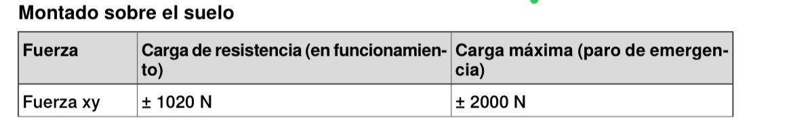
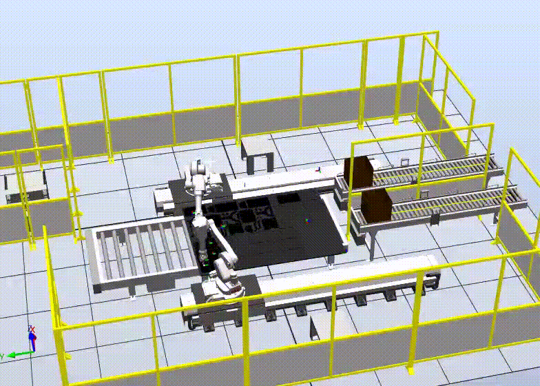

Para el creación de la celda de manufactura robotizada intentaremos seguir una secuencia de pasos que nos darán como resultado una propuesta aceptada de celda de manufactura lista para su construcción e implementación
Diagrama de flujo para la creación de una celda.
Para este paso se consideron el objetivo y aspectos clave del proyecto con el fin de determinar el alcance y orientar el proyecto. Clasificando los distintos aspectos según su importancia se realizó un análisis para así identificar las dependencias responsables y ver cómo se podría dar solución de manera temprana para prevenir inconvenientes más adelante. La clasificación de importancia es la siguiente:
Hoja de Trabajo, Orientación.
Dado que el enfoque principal de la celda es el de optimizar el proceso de taladrado, se clasificaron las piezas que requieren de este proceso y se identificaron aspectos como la cantidad de huecos y el numero de piezas por producto.
Tabla de clasificación de partes.
En la sección de Gestión de Producción
pudimos observar los requerimientos de los distintos procesos involucrados en la fabricación
de los productos, incluyendo por supuesto, aquellos que son de nuestro interés para el
diseño de la celda robotizada; osea corte láser y taladrado.
Se hizo el anáisis de los tiempos de proceso pre y pos automatización y se calcularon unos
indicadores (kpi), en los cuales podemos observar valores significativamente bajos. Esto
nos indica la gran necesidad del automatizar el proceso.
Para el corte manual se realiza con una sierra sin fin. En este proceso, un trabajador suele cortar a una velocidad
aproximada de 0.03 m/s. El tiempo entre cortes puede ser de hasta 30 segundos. Para producir un productos se requieren
realizar aproximadamente 14 cortes, y la longitud de corte calculada por producto es de 6.6m. Teniendo en cuenta el
tiempo que se tarda pegando la plantilla de corte sobre el material (calculado en 180 segundos), y el tiempo que se
tarda retirando las piezas tras el corte (calculado en 120 segundos) se obtienen los tiempos:
Tiempo de corte: 6.6/0.03 = 220 segundos
Th: 14 * 30 = 420 segundos
Tiempo de ciclo: 640 segundos
Tiempo de setup: 180 segundos
Tiempo de recuperación: 120 segundos
No. Operarios: 1
No. Maquinas: 1
Adicionalmente, sabiendo que la vida útil de la sierra es de 12 horas de corte, se encuentra:
MTBF: 43200 segundos
MTTR: 600 segundos
Disponibilidad: 98.6%
El taladrado ocupa 6 segundos por cada agujero. A esto se le suma por cada agujero 20 segundos de medición y marcación,
y 10 segundos de manipulación de la herramienta (taladro). También se considera que se cambia dos veces la broca, en lo
cual el operario tarda 45 segundos cada vez. La cantidad aproximada de agujeros por producto es de 58. Se supone un
tiempo de setup de 120 segundos en el que se conecta el taladro y se ajusta la broca, así como un tiempo de recuperación
de 20 segundos, en el que se desconecta la herramienta.
Tiempo de taladrado: 6*58 = 348 segundos
Th: 20 * 58 = 1160 segundos
Tth: 10*58 + 2*45 = 670 segundos
Tiempo de ciclo: 2178 segundos
Tiempo de setup: 120 segundos
Tiempo de recuperación: 20 segundos
No. Operarios: 1
No. Maquinas: 1
El mantenimiento del taladro se realiza cada 100 horas de uso, y tarda aproximadamente una hora (limpieza y
lubricación):
MTBF: 360000 segundos
MTTR: 3600 segundos
Disponibilidad: 99.0%
Análisis de procesos.
Se plantearón dos alternativas diferentes para la celda robotizada. En ambos casos los procesos son los mismos y la única diferencia es la distribución espacial de la planta y la celda.
Alternativas de distribución de la planta y la celda.
Se realizó el análisis presente en el siguiente archivo para seleccionar la alternativa más adecuada para la celda.
Análisis de selección de alternativas.
Se determinó que la mejor altermativa es la B, cumpliendo favorablemente los criterios recien presentados y además, debido a que requerimos una alta producción con una cantidad moderada de piezas, la mejor opción es una celda tipo linea de producción.
El diseño de detalle de la celda se realizará proximamente.
Para seleccionar el robot, se tuvieron en cuenta en mayor medida los parámetros y requerimientos físicos de la operación de taladrado. Se seleccionó un robot ABB IRB 140, ya que este nos brinda la fuerza que requerimos para realizar la operación de taladrado en el MDF, la cual no es superior a 6N. En cuanto al alcance, se diseñará la zona de trabajo del robot de tal manera que este pudiera alcanzar todas las piezas que se operarán en ese momento sin la necesidad de hacer algún cambio. La instalación de este robot no es costosa ya que el piso o la superficie donde se colocará el robot debe aguantar máximo 4 KN de compresión, 2 KN de cortante y 700 Nm de par.

Tabla de requerimientos para montaje en suelo. Hoja de datos IRB 140.
Tabla de requerimientos para montaje en suelo. Hoja de datos IRB 140.
Utilizando el software ABB RobotStudio se creo una estación con los dos robots seleccionados y rieles de avance lineal de 4 metros de largo. El controlador usado fue el IRC5, para el cual se creó un sistema en el programa y se configuraron algunas opciones requeridas para los movimientos y para las comunicaciones con Ignition. También se añadieron algunos componentes físicos adicionales en la estación, tales como conveyors, paneles de separación, las mesas de taladrado y cajas. La Simulación contruida consiste en que a la celda llega, por medio de un conveyor, la lámina cortada a láser ya pintada. Los robots empiezan a tomar las piezas a ambos costados de la lámina utilizando herramientas de succión tipo ventosa o similar, y las llevan hacia las mesas de taladrado, si la pieza lo requiere, y luego las empacan en cajas. Cuando se ha completado una caja con un producto, ésta se empieza a mover y sale de la estacón a través del conveyor.

Fragmento de la Simulación en RS.